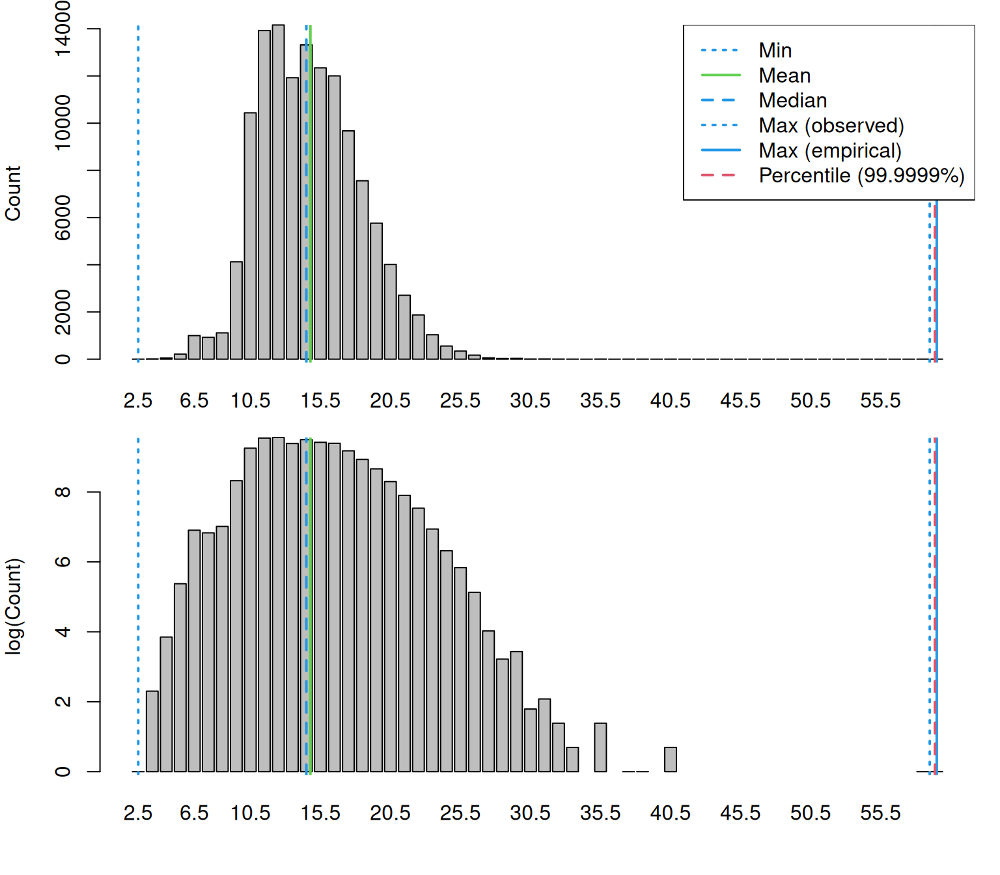
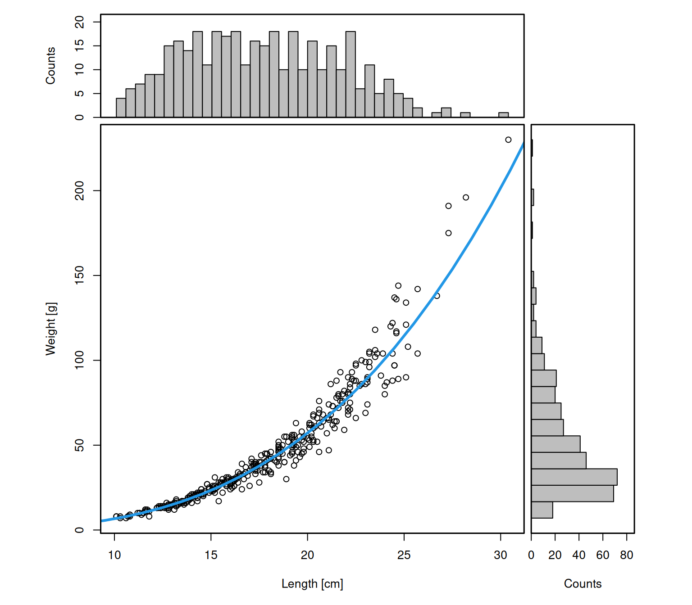
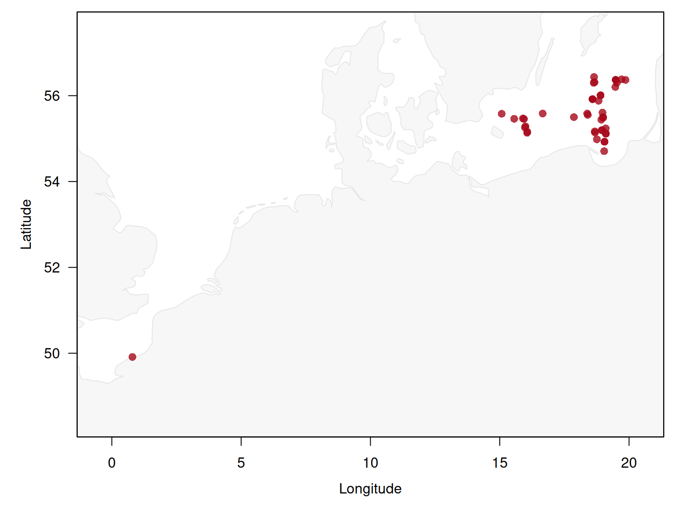
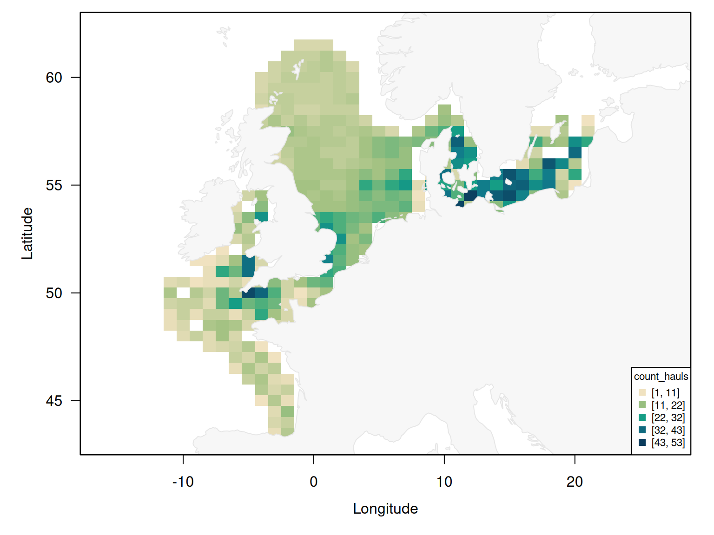
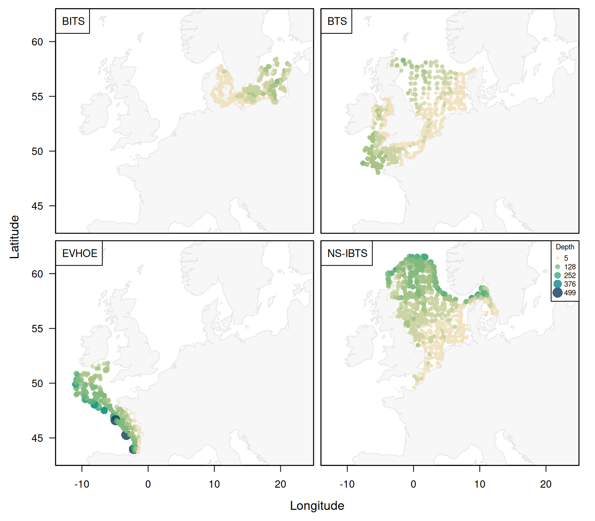
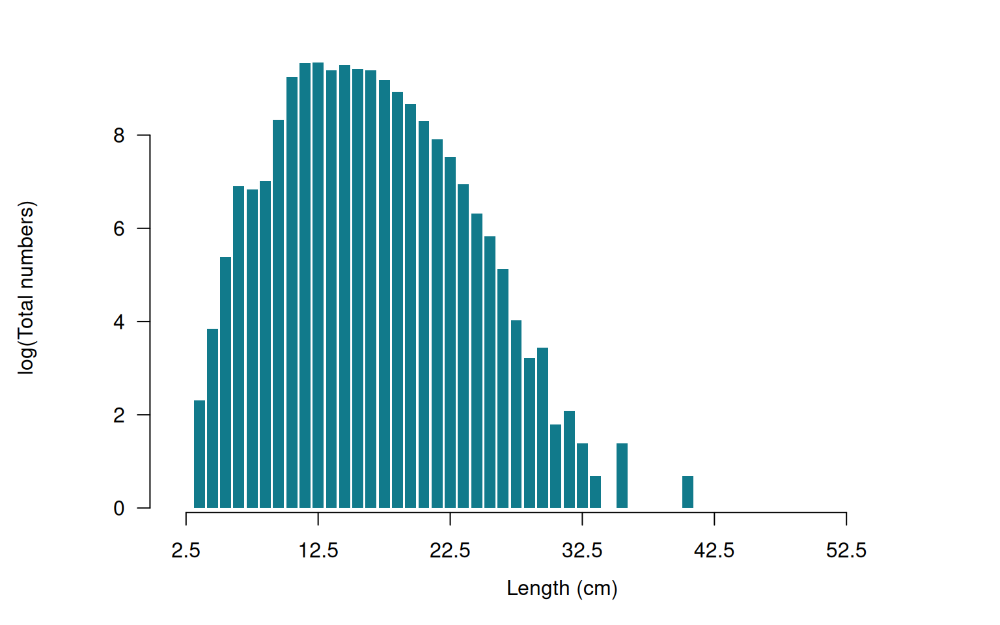
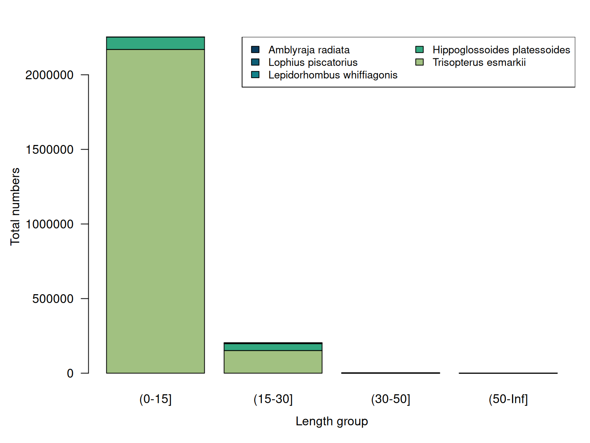

Data processing and quality control
Source:vignettes/data-processing-and-qc.Rmd
data-processing-and-qc.RmdEvery DATRAS analysis rests on a chain of processing decisions: which hauls count as valid, how sub-sampled catches are raised, what a missing value looks like, and which records are dropped along the way. Most of those decisions are made before a user writes a single line of analysis code.
This vignette documents that chain end to end. For each step it states what is done, whether it happens automatically or on request, how to inspect its effect, and how to change or switch it off. It also lists checks that DATRASextra deliberately leaves to the user, because the right answer depends on the analysis.
Two principles guide the design:
-
Nothing is silently discarded. The mandatory
filters in
clean_datras()are the DATRAS-recommended minimum, and the function prints what will be removed before removing it. -
Checks report, they do not delete.
check_outliers(),check_lengths()andcheck_weights()are opt-in, andcheck_outliers()returns the object unchanged unless explicitly asked to remove hauls.
Overview of the pipeline
| Stage | Function | What happens | Automatic? |
|---|---|---|---|
| 1. Download |
download_datras() (via
DATRAS::getDatrasExchange()) |
Query ICES web service, harmonise column names, convert the
-9 sentinel to NA, match orphan
CA records, archive as exchange zip |
automatic |
| 2. Read |
read_datras() (via
DATRAS::readICES()) |
Parse exchange CSV, drop truncated files, match orphan
CA records, drop duplicated hauls, combine
survey-years |
automatic |
| 3. Derived variables | DATRAS::addExtraVariables() |
Create haul.id, LngtCm,
Species, Count,
lon/lat, abstime,
Roundfish; treat hauls without HL records as
zero-catch |
automatic |
| 4. Cleaning | clean_datras() |
Filter on HaulVal and StdSpecRecCode,
optionally impute depth and harmonise species, optionally subset |
automatic filters, optional extras |
| 5. Checks |
check_outliers(), check_lengths(),
check_weights(), add_swept_area()
|
Flag implausible values, summarise length and weight distributions, report swept-area missingness | opt-in |
| 6. Inspection |
print(), summary(),
plot_datras_overview(),
plot_length_distribution(),
plot_species_composition()
|
Tabular and visual review | opt-in |
| 7. Extraction record |
extraction(), write_manifest(),
verify_extraction()
|
Record where the data came from and detect upstream revisions | automatic record, opt-in verification |
Throughout we use the bundled example data set mini:
four surveys, seven gears, five species, 2022-2023. Unlike the
dab example, mini has not been pre-cleaned, so
every filter described below actually does something.
mini
#> Object of class 'datras_raw'
#> ===========================
#> Number of hauls: 3939
#> Number of species: 5
#> Number of surveys: 4 [BITS, BTS, EVHOE, NS-IBTS]
#> Number of gears: 9
#> Number of countries: 13
#> Years: 2022 - 2023
#> Quarters: 1 3 4
#> Longitude range: -10.96 - 21.65 deg
#> Latitude range: 43.69 - 61.59 deg
#> Depth range: 5 - 499 m
#> Haul duration: 0 - 62 minutes
#> Valid hauls: 3756 (183 invalid)
#> Hauls with catch: 1681 (zero catch: 2258)
#> Extraction: 14 source(s), extracted 2026-09-15, ICES calculation 2023-03-22 to 2026-06-25Stage 1: Download
download_datras() wraps
DATRAS::getDatrasExchange(), which in turn queries the ICES
DATRAS web service. Several things happen before anything reaches
disk.
## One survey, selected years, archived under <path>/NS-IBTS/
x <- download_datras(path = "data/datras", surveys = "NS-IBTS", years = 2020:2023)Which surveys and years are requested
Available surveys, years and quarters are read from the ICES web
service. If the server does not answer within timeout
seconds (default 10), the function falls back to a cached survey list
and, for years, to whatever zip files are already present locally. This
keeps a partially completed download resumable when the connection is
unreliable, but it also means that an offline session may silently work
from a stale survey list.
Two surveys are skipped by default because they are test entries or
do not contain the full set of required tables: Test-DATRAS
and NS-IBTS_UNIFtest. Set
include_flagged = TRUE to download them anyway.
The download_hl and download_ca arguments
control whether the length-frequency and biological tables are fetched
at all. Omitting whichever table an analysis does not need reduces both
download time and memory use; CA is the usual candidate,
since many analyses need only catch-at-length.
Harmonisation applied on download
DATRAS::getDatrasExchange() applies the following, in
order:
-
Column renaming
(
DATRAS::renameDATRAS()). Names are capitalised, and the web-service names are mapped onto the exchange-format names:ValidAphiaIDbecomesValid_Aphia,LngtClassbecomesLngtClas,AgeRingsbecomesAge, andCANoAtLngt/NoAtLngtbecomeNoAtALK. This is why the same variable has different names in the ICES documentation and in an R object. -
Missing-value conversion
(
DATRAS::minus9toNA()). DATRAS encodes missing numeric values as-9. Every numeric column is scanned and-9is replaced byNA. Note that this applies to numeric columns only: a-9stored as text is left untouched. -
StatRecback-fill. If theCAtable has noStatReccolumn, it is filled fromAreaCode. - Derived variables are added (see Stage 3 below).
-
Orphan
CArecords are matched back to hauls withDATRAS::fixMissingHaulIds()usingstrict = TRUE, so ambiguous records are left unmatched rather than attributed to an arbitrary haul. - Character columns are converted to factors.
What gets archived
Before writing, download_datras() strips the derived
columns again and maps the names back to the exchange-format spelling,
so the archived zip is a faithful DATRAS exchange file rather than an
R-specific artefact. Anyone can re-read it, with
DATRASextra or with any other tool that understands the
exchange format. Files are named
<survey>_<year>.zip inside a per-survey
subdirectory.
This separation matters for reproducibility: the archive is the raw
record, and every processing step described in the rest of this vignette
is reapplied from it each time the data are read. Alongside the zip
files, download_datras() maintains
DATRAS_manifest.csv, recording the extraction date, a
checksum and the ICES calculation date of every survey-year-quarter it
retrieved; see Recording and verifying the extraction
below.
## Re-download and replace existing files
download_datras(path = "data/datras", surveys = "NS-IBTS", years = 2020,
overwrite = TRUE)Worth checking after a download: that a file exists for every year
you expect, and that none of them is suspiciously small.
read_datras() performs the size check for you (next
section), but an unexpectedly missing year usually means the survey was
not conducted rather than that the download failed.
Stage 2: Reading data into R
x <- read_datras("data/datras", surveys = "NS-IBTS", years = 2020:2023)Parsing and file-level checks
A DATRAS exchange CSV contains three stacked blocks, each with its
own header line. DATRAS::readICES() locates the header
lines, reads each block separately, and applies
na.strings = c("-9", "-9.0", "-9.00", "-9.0000") so that
the missing-value sentinel is converted on the way in. It then verifies
that the number of data rows plus header lines equals the number of
lines in the file, and aborts with
"csv file appears to be corrupt" if it does not.
read_datras() adds a guard of its own: files smaller
than min_file_size (default 1e4 bytes) are
reported and excluded, because a truncated or empty download would
otherwise raise a confusing parse error. A year in which a survey was
not conducted typically produces such an empty file.
Matching biological records to hauls: the strict
argument
Records in CA frequently lack the station and haul
numbers that make up haul.id.
DATRAS::fixMissingHaulIds() matches them back to a haul
using survey, year, quarter, country, ship and statistical rectangle.
When that combination identifies more than one candidate haul, the two
settings diverge:
-
strict = FALSEassigns the record to one of the candidate hauls at random. -
strict = TRUEleaves the record asNA, and it is dropped by any subsequent subsetting.
Which behaviour is right depends on the analysis: random assignment preserves sample size for aggregate age-length keys, while leaving records unmatched is the honest choice when individual records must be attributable to a specific haul.
## Attribute ambiguous CA records to an arbitrary haul
x <- read_datras("data/datras", strict = FALSE)Combining survey-year files
Files are read one at a time and combined. Two safeguards apply:
-
Duplicated haul identifiers. The same haul
appearing in more than one file is reported by
haul.idand removed. Note that the two code paths behave slightly differently: the sequential reader (ncores = 1) keeps the first copy encountered and drops later ones, while the parallel reader removes all copies. If duplicates are reported, the underlying archive is worth investigating rather than accepting either behaviour. -
Type-consistent binding.
c.datras_raw()guards against a column that is a factor in one year and an integer in another. Plainrbind()would use the factor’s level vector as the type and reinterpret the other year’s integers as factor codes, silently turning valid values intoNA.
For large reads, prune = TRUE,
drop_hl = TRUE and drop_ca = TRUE reduce peak
memory by trimming columns or dropping whole tables inside the reader,
and surveys / years restrict which files are
opened at all.
Stage 3: Variables created while reading
The columns most analyses actually use are not in the exchange file
at all: they are constructed by DATRAS::addExtraVariables()
during both download and read.
Haul identifier
haul.id = Survey:Year:Quarter:Country:Ship:Gear:StNo:HaulNoThis is the key that links HH, HL and
CA.
Length in centimetres
LngtClas is reported in units that depend on
LngtCode. The conversion to LngtCm uses:
LngtCode |
Multiplier for LngtClas
|
Meaning |
|---|---|---|
. |
0.1 | reported in mm |
0 |
0.1 | reported in mm, 0.5 cm classes |
1 |
1 | reported in cm, 1 cm classes |
2 |
1 | reported in cm, 2 cm classes |
5 |
1 | reported in cm, 5 cm classes |
There is a trap here worth stating explicitly. A
second, different table with the same codes is used by
get_accuracy_cm() (and
DATRAS::getAccuracyCM()) to describe the bin
width: . = 0.1, 0 = 0.5, 1 =
1, 2 = 2, 5 = 5. The first table converts a
recorded value to centimetres; the second says how wide the length class
is. They are not interchangeable.
## Which length codes occur, and what resolution do they imply
table(mini[["HL"]]$LngtCode, useNA = "ifany")
#>
#> . 0 1
#> 82 9736 1505 12681
## The coarsest resolution present is used for automatic length binning
get_accuracy_cm(mini)
#> Warning in get_accuracy_cm(mini): Mixed accuracies found in var[[3]]$LngtCode -
#> worst chosen: 1 cm
#> Warning in get_accuracy_cm(mini): NAs found in var[[3]]$LngtCode - assumed to
#> be 1 cm
#> [1] 1Mixed codes are common when several surveys or countries are
combined, and get_accuracy_cm() warns and falls back to the
coarsest resolution. Empty LngtCode values are assumed to
be 1 cm. If that assumption is wrong for your data, pass
cm_breaks or by explicitly to the length
functions rather than relying on the automatic choice.
Species names
Species is resolved from SpecCode using
either an ITIS/TSN lookup table or a WoRMS lookup table, depending on
whether SpecCodeType is "W". Older survey
years often use TSN codes while recent years use WoRMS codes, so both
paths can occur in a single combined object.
table(mini[["HL"]]$SpecCodeType, useNA = "ifany")
#>
#> W
#> 24004Raised catch numbers
This is the most consequential derived variable:
Count = HLNoAtLngt * (HaulDur / 60 if DataType == "C", else 1) * SubFactorTwo corrections are folded into one column:
-
Sub-sampling.
SubFactorraises the measured sub-sample to the whole catch. -
Standardisation of reporting units.
DataType == "C"means numbers were reported per hour, so they are converted back to per-haul using the haul duration.DataType == "R"(raw) and"P"are used as reported.
A combined object frequently mixes reporting conventions:
table(mini[["HH"]]$DataType, useNA = "ifany")
#>
#> C R P
#> 978 2716 245Anything computed from Count therefore already accounts
for sub-sampling and per-hour reporting. Recomputing from
HLNoAtLngt without applying both corrections is a common
source of error. Note also that check_lengths() warns if
DataType == "S" is present, since those hauls are treated
as "R".
Time and position
-
lonandlatare copies ofShootLongandShootLat, that is the position where the gear was shot, not the midpoint of the tow.HaulLatandHaulLonghold the end position if a tow midpoint is needed. -
abstimeis a decimal year,timeOfYearits fractional part, andTimeShotHourthe time of day in decimal hours. These are convenient for smoothers over time or time of day. -
Roundfishis the North Sea roundfish area, derived fromStatRec.
Hauls without catch records
Any haul present in HH that has no rows in
HL is interpreted as a zero-catch haul.
During reading, the upstream code prints a warning listing the affected
hauls. This is the correct treatment for a species-restricted extract
such as mini, where most hauls simply did not catch the
five target species, but it means a haul missing from HL
for a data-handling reason is indistinguishable from a genuine zero.
The split is reported by print():
mini
#> Object of class 'datras_raw'
#> ===========================
#> Number of hauls: 3939
#> Number of species: 5
#> Number of surveys: 4 [BITS, BTS, EVHOE, NS-IBTS]
#> Number of gears: 9
#> Number of countries: 13
#> Years: 2022 - 2023
#> Quarters: 1 3 4
#> Longitude range: -10.96 - 21.65 deg
#> Latitude range: 43.69 - 61.59 deg
#> Depth range: 5 - 499 m
#> Haul duration: 0 - 62 minutes
#> Valid hauls: 3756 (183 invalid)
#> Hauls with catch: 1681 (zero catch: 2258)
#> Extraction: 14 source(s), extracted 2026-09-15, ICES calculation 2023-03-22 to 2026-06-25The ICES calculation date
One column is neither derived nor really part of the survey data:
DateofCalculation, the date on which ICES last recalculated
the records. It is constant per survey, year and quarter, and it is the
only field that reveals that the database has been revised since a
download. It is discussed in Recording and verifying the
extraction below.
with(mini[["HH"]], table(Survey, DateofCalculation))
#> DateofCalculation
#> Survey 20230322 20230425 20231207 20240301 20240326 20240409 20240507
#> BITS 0 0 0 0 308 0 0
#> BTS 312 0 133 199 0 0 0
#> EVHOE 0 125 0 0 0 0 143
#> NS-IBTS 0 0 0 0 0 348 0
#> DateofCalculation
#> Survey 20240806 20240814 20250118 20250212 20250404 20260625
#> BITS 322 343 333 0 0 0
#> BTS 0 0 0 444 0 0
#> EVHOE 0 0 0 0 0 0
#> NS-IBTS 0 0 0 0 355 574Type coercions to be aware of
-
YearandQuarterare converted to factors.mini[["HH"]]$Year + 1does not do what it looks like; useas.integer(as.character(Year)). - All character columns become factors.
-
haul.idinHLandCAis re-levelled to the levels present inHH, so records that do not correspond to a haul inHHbecomeNAand are dropped by later subsetting. - Duplicated rows in
HHabort the read entirely with"Duplicated rows found in HH data - data file is corrupt".
Stage 4: Cleaning with clean_datras()
clean_datras() applies the standard DATRAS cleaning
filters. With verbose = TRUE (the default) it prints a full
account of the data before filtering, and
explain_codes = TRUE adds the meaning of each code.
surv <- clean_datras(mini, explain_codes = TRUE)
#> HaulVal (3939 hauls before cleaning):
#> Code n Description
#> A 16 Additional valid stations not used for index calculations
#> I 75 Invalid haul
#> N 92 No oxygen (BITS only)
#> V 3756 Valid haul
#>
#> StdSpecRecCode:
#> Code n Description
#> 0 10 No standard species recorded
#> 1 3917 All standard species recorded
#> 4 12 Individual standard species recorded
#>
#> BySpecRecCode:
#> Code n Description
#> 0 22 No bycatch species recorded
#> 1 3917 All bycatch species recorded
#>
#> Hauls with missing lon: 0
#> Hauls with missing lat: 0
#> Hauls with missing Year: 0
#> Hauls with missing Depth: 3
#> Hauls with missing HaulDur: 0
#> Hauls with missing Distance: 101
#> Hauls with missing GroundSpeed: 830
#> Hauls with missing WingSpread: 2319
#> Hauls with missing DoorSpread: 1593
#>
#> Hauls removed by HaulVal filter: 91
#> Hauls removed by StdSpecRecCode filter: 12
#> Hauls remaining: 3836
#>
#> Note: 92 retained haul(s) have HaulVal = "N" (no oxygen, BITS only) and may have unusually short HaulDur.The report has three parts: the distribution of the three recording codes, the missing-value counts for the variables that later steps depend on, and the number of hauls removed by each filter.
Filter 1: haul validity
Only hauls with HaulVal in c("V", "N") are
retained.
| Code | Meaning | Kept |
|---|---|---|
V |
Valid haul | yes |
N |
No oxygen (BITS only) | yes |
S |
Standard haul | no |
A |
Additional valid station, not used for index calculations | no |
C |
Calibrated (BITS only) | no |
I |
Invalid haul | no |
M |
Pelagic midwater trawl (BITS only) | no |
P |
Partly valid haul (sensor problems) | no |
"N" hauls are Baltic stations aborted because of oxygen
depletion. They are retained because the catch is valid for the duration
fished, but they often have an unusually short HaulDur, and
clean_datras() says so when any are kept. Whether to keep
them is an analysis decision: they are legitimate observations, but a
swept-area index that does not account for the shorter tow will be
biased.
Filter 2: standard species recording
Only records with StdSpecRecCode == 1 (“all standard
species recorded”) are retained. Codes 2, 3
and 4 mean that only pelagic, roundfish or individual
standard species were recorded, and 0 means none were.
Keeping them would mix hauls with different species coverage, which
biases community-level and multi-species analyses.
Note what is not filtered.
BySpecRecCode is reported but never used as a filter:
bycatch recording protocols differ by survey, and which species are
usable under each code is an analysis-specific judgement. The relevant
per-code species lists exist in the source of
correct_species() as reference material but are
deliberately inactive.
Optional: imputing missing depths
Disabled by default. When enabled, missing Depth values
are predicted from a GAM of log(Depth) on a two-dimensional
smooth of longitude and latitude, using the hauls that do have a
recorded depth. This requires the R package mgcv.
surv_dep <- clean_datras(mini, impute_missing_depth = TRUE, verbose = FALSE)
## Missing depths before and after
c(before = sum(is.na(mini[["HH"]]$Depth)),
after = sum(is.na(surv_dep[["HH"]]$Depth)))
#> before after
#> 3 0The imputed values replace NA in place, and there is no
flag distinguishing them afterwards. If that distinction matters, record
the affected haul identifiers before cleaning:
imputed_ids <- as.character(mini[["HH"]]$haul.id[is.na(mini[["HH"]]$Depth)])
imputed_ids
#> [1] "BITS:2022:1:DK:26HF:TVS:85:43" "BTS:2023:3:BE:11BU:BT4A:98:51"
#> [3] "BTS:2023:3:BE:11BU:BT4A:83:52"Spatial interpolation of depth is reasonable on a continental shelf and poor across a shelf break. Inspect the result before relying on it.
Optional: harmonising species
correct_species = TRUE (the default) calls
correct_species(), which does two things.
First, it collapses taxa that are not reliably identified to species
in the field down to genus level, updating Species,
Valid_Aphia and Rank: Dipturus,
Liparis, Chelon, Mustelus, Alosa,
Argentina, Callionymus, Ciliata,
Gaidropsarus, Sebastes, Syngnatus,
Pomatoschistus and Gobius. Records identified as
Nerophis ophidion, Leusueurigobius, Neogobius
and Argentinidae are folded into the corresponding genus.
Second, it corrects outdated or misspelled names: Synaphobranchus kaupi becomes Synaphobranchus kaupii, and Dipturus linteus becomes Rajella lintea with the current AphiaID.
The Rank column it adds makes the outcome visible:
table(surv[["HL"]]$Rank, useNA = "ifany")
#>
#> species
#> 23827Set correct_species = FALSE to keep the original species
assignments, for example when reproducing an earlier analysis or when
comparing against the raw ICES extract.
Optional: subsetting
aphias, years, quarters and
gears are applied after the filters, as a
convenience:
surv_sub <- clean_datras(mini, years = 2023, quarters = 1,
aphias = 127137, verbose = FALSE)
surv_sub
#> Object of class 'datras_raw'
#> ===========================
#> Number of hauls: 840
#> Number of species: 1 [Hippoglossoides platessoides (127137)]
#> Number of surveys: 3 [BITS, BTS, NS-IBTS]
#> Number of gears: 5
#> Number of countries: 11
#> Years: 2023 - 2023
#> Quarters: 1
#> Longitude range: -7.64 - 21.43 deg
#> Latitude range: 48.04 - 61.59 deg
#> Depth range: 7 - 257 m
#> Haul duration: 0 - 34 minutes
#> Valid hauls: 818 (22 invalid)
#> Hauls with catch: 247 (zero catch: 593)
#> Extraction: 3 source(s), extracted 2026-09-15, ICES calculation 2024-03-01 to 2026-06-25Modifying or omitting steps
| Step | Argument | Default | Effect of changing |
|---|---|---|---|
| Pre-cleaning report | verbose |
TRUE |
FALSE silences it, for scripts |
| Code descriptions | explain_codes |
FALSE |
TRUE annotates each code |
| Haul validity filter | none | always applied | reproduce manually with subset()
|
| Standard species filter | none | always applied | reproduce manually with subset()
|
| Depth imputation | impute_missing_depth |
FALSE |
TRUE fills missing depths by GAM |
| Species harmonisation | correct_species |
TRUE |
FALSE leaves names untouched |
| Subsetting |
aphias, years, quarters,
gears
|
NULL |
applied after filtering |
| Alternative pipeline | do_fishglob |
FALSE |
TRUE delegates to clean_fishglob()
|
The two mandatory filters have no on/off switch, but they are
ordinary subset() calls and are trivially replaced when a
different rule is wanted:
## Keep additional valid stations as well as valid and no-oxygen hauls
custom <- subset(mini, HaulVal %in% c("V", "N", "A"))
## Accept hauls where only individual standard species were recorded
custom <- subset(custom, StdSpecRecCode %in% c(1, 4))
## Then apply the optional steps only
custom <- correct_species(custom)
custom
#> Object of class 'datras_raw'
#> ===========================
#> Number of hauls: 3864
#> Number of species: 5
#> Number of surveys: 4 [BITS, BTS, EVHOE, NS-IBTS]
#> Number of gears: 9
#> Number of countries: 13
#> Years: 2022 - 2023
#> Quarters: 1 3 4
#> Longitude range: -10.96 - 21.65 deg
#> Latitude range: 43.69 - 61.59 deg
#> Depth range: 5 - 499 m
#> Haul duration: 0 - 43 minutes
#> Valid hauls: 3756 (108 invalid)
#> Hauls with catch: 1673 (zero catch: 2191)
#> Extraction: 14 source(s), extracted 2026-09-15, ICES calculation 2023-03-22 to 2026-06-25Compare the haul count with surv above to see what the
relaxed rule buys, and decide whether the extra stations are usable for
your purpose.
For the FishGlob workflow, do_fishglob = TRUE replaces
the whole cleaning stage with clean_fishglob(); see
vignette("articles/fishglob").
Stage 5: Quality-control checks
These functions are deliberately not called by
clean_datras(). They flag values that are implausible
rather than formally invalid, and whether a flagged record should be
excluded is a decision the analyst has to make.
check_outliers()
Two independent mechanisms, both optional to act on.
Rule-based checks
Fixed, physically motivated bounds. strict = TRUE is the
default; FALSE relaxes the upper bounds.
| Table | Variable | Rule (strict = TRUE) |
Rule (strict = FALSE) |
|---|---|---|---|
HH |
Quarter |
outside 1-4 | same |
HH |
Year |
before 1965 or in the future | same |
HH |
TimeShot |
not a valid HHMM time | same |
HH |
HaulDur |
outside 0-240 min | outside 0-360 min |
HH |
ShootLat |
outside -90 to 90 | same |
HH |
ShootLong |
outside -180 to 180 | same |
HH |
Depth |
outside 0-2000 m | outside 0-3000 m |
HH |
GroundSpeed |
outside 0-6 knots | outside 0-8 knots |
HH |
DoorSpread |
outside 0-250 m | outside 0-300 m |
HH |
WingSpread |
outside 0-80 m | outside 0-120 m |
HH |
WingSpread, DoorSpread
|
wing spread exceeds door spread | same |
HL |
LngtCm |
outside 0-200 cm | outside 0-300 cm |
CA |
Sex |
not in "", F, M,
U
|
same |
CA |
Age |
outside 0-50, or non-integer | outside 0-80 |
CA |
NoAtALK |
negative or non-integer | same |
CA |
IndWgt |
outside 0-1e5 g | outside 0-3e5 g |
CA |
LngtCode |
not in "", ., 0,
1
|
same |
CA |
LngtClas |
outside 0-2000, or non-integer | outside 0-3000 |
Rule violations get severity "invalid".
Percentile checks
Enabled with pct = TRUE. Within groups, values outside
the requested percentiles are flagged with severity
"extreme". Defaults:
pct_probs = c(0.01, 0.99)-
pct_by:HHgrouped by survey, quarter, gear and ship;HLandCAby survey, quarter, gear and species -
pct_vars:HaulDur,Depth,DoorSpread,WingSpreadinHH;LngtCminHL;Age,IndWgt,LngtClasinCA -
pct_min_n = 50: groups with fewer observations are skipped rather than producing unstable thresholds -
pct_log_vars:IndWgtpercentiles are computed on the log scale
Grouping matters. Comparing a beam trawl against a GOV trawl on the same threshold produces nonsense; the defaults compare like with like.
Running the checks
surv <- check_outliers(surv, pct = TRUE)
#> Detected 1161 flagged row(s) in 604 haul(s). (includes percentile checks)
#> table var severity one
#> 1 CA Age extreme 27
#> 2 HH Depth extreme 84
#> 3 HH DoorSpread extreme 56
#> 4 HH HaulDur extreme 45
#> 5 CA IndWgt extreme 149
#> 6 CA LngtClas extreme 337
#> 7 HL LngtCm extreme 382
#> 8 HH WingSpread extreme 37
#> 9 HH DoorSpread invalid 1
#> 10 HH GroundSpeed invalid 10
#> 11 HH HaulDur invalid 33By default nothing is removed: the object comes back unchanged, with four attributes attached.
## Every flagged record, one row each
report <- attr(surv, "outlier_report")
dim(report)
#> [1] 1161 13
head(report[report$severity == "invalid", c("table", "var", "value", "reason")])
#> table var value reason
#> 1 HH HaulDur 0 HaulDur outside 0-240 min
#> 2 HH HaulDur 0 HaulDur outside 0-240 min
#> 3 HH HaulDur 0 HaulDur outside 0-240 min
#> 4 HH HaulDur 0 HaulDur outside 0-240 min
#> 5 HH HaulDur 0 HaulDur outside 0-240 min
#> 6 HH HaulDur 0 HaulDur outside 0-240 minThe report columns are: table, var,
row, haul.id, value,
reason, method ("rule" or
"percentile"), severity
("invalid" or "extreme"), p_lo /
p_hi (the percentiles used), thr_lo /
thr_hi (the resulting thresholds) and group
(the grouping key).
Three further attributes hold the affected haul identifiers:
c(all = length(attr(surv, "outlier_hauls")),
invalid = length(attr(surv, "outlier_hauls_invalid")),
extreme = length(attr(surv, "outlier_hauls_extreme")))
#> all invalid extreme
#> 604 44 565Which variables drive the flags:
Acting on the results
## Remove only the rule-based failures; percentile flags are kept
cleaned <- check_outliers(surv, action = "remove", verbose = FALSE)
nrow(cleaned[["HH"]])
#> [1] 3792remove_extremes = TRUE additionally removes the
percentile-flagged hauls, but that is rarely appropriate: with
pct_probs = c(0.01, 0.99), roughly two per cent of the data
is flagged by construction, whether or not anything is wrong. The flags
are a place to start looking, not a verdict.
Narrower or stricter runs:
## Only check the variables that feed the swept-area calculation
sa_check <- check_outliers(surv, vars = c("HaulDur", "Distance", "GroundSpeed",
"DoorSpread", "WingSpread"),
pct = TRUE, pct_probs = c(0.005, 0.995),
verbose = FALSE)
nrow(attr(sa_check, "outlier_report"))
#> [1] 131A threshold of your own is usually easier to apply to the report than to express as a new rule. The report gives you the haul identifiers, so any selection can be turned into a subset:
## Hauls flagged for haul duration, by method
subset(report, var == "HaulDur")[c("value", "method", "thr_lo", "thr_hi")][1:5, ]
#> value method thr_lo thr_hi
#> 1 0 rule NA NA
#> 2 0 rule NA NA
#> 3 0 rule NA NA
#> 4 0 rule NA NA
#> 5 0 rule NA NA
## Your own threshold: hauls shorter than 15 minutes
short_ids <- unique(report$haul.id[report$var == "HaulDur" &
as.numeric(report$value) < 15])
length(short_ids)
#> [1] 39
## Drop them if you decide they are unusable
nrow(subset(surv, !haul.id %in% short_ids)[["HH"]])
#> [1] 3797
check_lengths()
Summarises the pooled length distribution of a single species and
compares the observed range with the empirical maximum length from the
bundled species_info table.
plaice <- subset(surv, Valid_Aphia == 127137)
plaice <- check_lengths(plaice)
#> [1] "Length statistics:"
#> min mean median maxObs maxEmp perc
#> 99.9999% 2 14.79 14.5 59 82.6 59.37
#> [1] "Observations above:"
#> maxLEmp percL
#> Numbers 0 1e+00
#> Percent 0 8e-04
attr(plaice, "length_check")$lPars
#> min mean median maxObs maxEmp perc
#> 99.9999% 2 14.78736 14.5 59 82.6 59.37062
attr(plaice, "length_check")$nAbove
#> maxLEmp percL
#> Numbers 0 1.0000000000
#> Percent 0 0.0007728991maxEmp is the published maximum length for the species
(from FishBase); perc is the requested upper percentile of
the observed distribution (length_percentile, default
99.9999). nAbove gives the number and
percentage of observations above each. A non-trivial count above
maxEmp points at length-unit errors or misidentification.
Use cm_breaks or by to control the binning,
and plot = FALSE to skip the figure.
check_weights()
Fits a log-log length-weight relationship to the individual weights
in CA and compares it with the lookup parameters in
species_info.
plaice <- add_numbers_at_length(plaice)
plaice <- check_weights(plaice)
#> [1] "Length statistics:"
#> min mean median max
#> 1 10.1 17.7 17.5 30.4
#> [1] "Weight statistics:"
#> min mean median max
#> 1 7 46.3 38 230
#> [1] "Estimated LW parameters:"
#> [1] "a = 0.005 b = 3.109"
#> [1] "Lookup LW parameters in the species_info table:"
#> [1] "a = 0.004 b = 3.245"
rbind(fitted = attr(plaice, "weight_check")$parEst,
lookup = attr(plaice, "weight_check")$parEmp)
#> a b
#> fitted 0.005151637 3.108955
#> lookup 0.003900000 3.244550A fitted exponent b far from 3, or a large discrepancy
against the lookup values, usually indicates unit errors or contaminated
records. max_length and max_weight exclude
implausible observations before fitting:
plaice2 <- check_weights(plaice, max_length = 60, max_weight = 5000)
#> [1] "Length statistics:"
#> min mean median max
#> 1 10.1 17.7 17.5 30.4
#> [1] "Weight statistics:"
#> min mean median max
#> 1 7 46.3 38 230
#> [1] "Estimated LW parameters:"
#> [1] "a = 0.005 b = 3.109"
#> [1] "Lookup LW parameters in the species_info table:"
#> [1] "a = 0.004 b = 3.245"
attr(plaice2, "weight_check")$parEst
#> a b
#> 1 0.005151637 3.108955
add_swept_area()
Swept area is where survey data are at their most incomplete, so the function reports what it had to invent.
surv_sa <- add_swept_area(surv, full_report = TRUE)
#> Swept-area missingness and imputation by survey and gear:
#> survey gear n_records n_imputed prop_imputed n_NA prop_NA na_DoorSpread
#> BITS TVL 751 423 0.563 0 0 410
#> BITS TVS 513 0 0.000 513 1 65
#> BTS BT4A 197 5 0.025 0 0 197
#> BTS BT4AI 198 0 0.000 0 0 198
#> BTS BT4P 164 0 0.000 0 0 164
#> BTS BT4S 165 0 0.000 0 0 165
#> BTS BT7 78 0 0.000 0 0 78
#> BTS BT8 266 0 0.000 0 0 266
#> EVHOE GOV 262 0 0.000 0 0 0
#> NS-IBTS GOV 1242 274 0.221 0 0 5
#> na_WingSpread na_Distance na_HaulDur na_GroundSpeed
#> 420 92 0 40
#> 513 0 0 0
#> 197 0 0 7
#> 198 0 0 0
#> 164 0 0 0
#> 165 0 0 0
#> 78 0 0 0
#> 266 0 0 266
#> 0 0 0 262
#> 272 2 0 214The summary is attached as an attribute and also gives a per-haul flag:
head(attr(surv_sa, "swept_area_summary"))
#> survey gear n_records n_imputed prop_imputed n_NA prop_NA na_DoorSpread
#> 1 BITS TVL 751 423 0.563 0 0 410
#> 2 BITS TVS 513 0 0.000 513 1 65
#> 3 BTS BT4A 197 5 0.025 0 0 197
#> 4 BTS BT4AI 198 0 0.000 0 0 198
#> 5 BTS BT4P 164 0 0.000 0 0 164
#> 6 BTS BT4S 165 0 0.000 0 0 165
#> na_WingSpread na_Distance na_HaulDur na_GroundSpeed
#> 1 420 92 0 40
#> 2 513 0 0 0
#> 3 197 0 0 7
#> 4 198 0 0 0
#> 5 164 0 0 0
#> 6 165 0 0 0
## Share of hauls whose spread or distance was imputed
mean(surv_sa[["HH"]]$SweptArea_imputed)
#> [1] 0.1830031Read the table by survey and gear rather than in aggregate. A gear
with prop_NA of 1 records neither of the required fields
and cannot be given a swept area at all; a gear with a high
prop_imputed has swept areas built from gear-level medians
rather than haul-specific measurements. Both are legitimate, but an
abundance index computed over them carries very different uncertainty
than the haul count suggests.
The plausibility filters are adjustable: min_speed
(default 1 knot), min_dist (default 0) and
max_dist_dev (default 0.2, the tolerated relative
difference between recorded distance and distance reconstructed from
duration and speed). width = "DoorSpread" switches the
width source for surveys that record door spread but not wing spread.
method = "fishglob" uses the survey-specific spread models
of the FishGlob workflow instead.
Stage 6: Inspecting the result
Tabular summaries
print() and summary() double as QC reports.
summary() picks up the outlier attributes
automatically:
summary(surv)
#> Object of class 'datras_raw'
#> ===========================
#> Number of hauls: 3836
#> Number of species: 5
#> Number of surveys: 4 [BITS, BTS, EVHOE, NS-IBTS]
#> Number of gears: 9
#> Number of countries: 12
#> Years: 2022 - 2023
#> Quarters: 1 3 4
#> Longitude range: -10.96 - 21.43 deg
#> Latitude range: 43.69 - 61.59 deg
#> Depth range: 5 - 499 m
#> Haul duration: 0 - 43 minutes
#> Valid hauls: 3744 (92 invalid)
#> Hauls with catch: 1669 (zero catch: 2167)
#> Outlier check: 604 flagged haul(s) -- see summary() for details.
#> Extraction: 14 source(s), extracted 2026-09-15, ICES calculation 2023-03-22 to 2026-06-25
#> Number of hauls by year and quarter:
#> Quarter
#> Year 1 3 4
#> 2022 700 650 430
#> 2023 840 777 439
#> Haul duration:
#> Min. 1st Qu. Median Mean 3rd Qu. Max.
#> 0.00 30.00 30.00 27.57 30.00 43.00
#> Species:
#> Amblyraja radiata (AphiaID 105865)
#> Trisopterus esmarkii (AphiaID 126444)
#> Lophius piscatorius (AphiaID 126555)
#> Hippoglossoides platessoides (AphiaID 127137)
#> Lepidorhombus whiffiagonis (AphiaID 127146)
#> ---
#> Outlier report:
#> Flagged hauls: 604 (44 rule-based, 565 percentile-based)
#> table var severity n
#> CA Age extreme 27
#> HH Depth extreme 84
#> HH DoorSpread extreme 56
#> HH HaulDur extreme 45
#> CA IndWgt extreme 149
#> CA LngtClas extreme 337
#> HL LngtCm extreme 382
#> HH WingSpread extreme 37
#> HH DoorSpread invalid 1
#> HH GroundSpeed invalid 10
#> HH HaulDur invalid 33
#> ---
#> Extraction:
#> survey year quarter date_of_calculation extracted source
#> BITS 2022 1 2024-08-14 2026-09-15 10:47:57 api
#> BITS 2022 4 2024-08-06 2026-09-15 10:47:57 api
#> BITS 2023 1 2025-01-18 2026-09-15 10:48:23 api
#> BITS 2023 4 2024-03-26 2026-09-15 10:48:23 api
#> BTS 2022 1 2023-12-07 2026-09-15 10:47:06 api
#> BTS 2022 3 2023-03-22 2026-09-15 10:47:06 api
#> BTS 2023 1 2024-03-01 2026-09-15 10:47:21 api
#> BTS 2023 3 2025-02-12 2026-09-15 10:47:21 api
#> EVHOE 2022 4 2023-04-25 2026-09-15 10:47:42 api
#> EVHOE 2023 4 2024-05-07 2026-09-15 10:47:48 api
#> NS-IBTS 2022 1 2026-06-25 2026-09-15 10:45:54 api
#> NS-IBTS 2022 3 2025-04-04 2026-09-15 10:45:54 api
#> ... and 2 further source(s); see extraction() for the full record.Things worth reading off this output: whether any year is missing from the series, whether the coordinate and depth ranges are plausible for the surveys included, the ratio of zero-catch to positive hauls, and the outlier breakdown.
Mapping the flagged hauls
The most efficient way to decide whether flagged records are a data problem or a real feature is to look at where they are.
bad <- subset(surv, haul.id %in% attr(surv, "outlier_hauls_invalid"))
plot_datras_overview(bad, col = "#A6081A", cex = 1.2)
Flags concentrated in one survey, one ship or one year point at a recording convention rather than at individual bad hauls.
Spatial and temporal coverage
plot_datras_overview(surv, mode = "grid", metric = "count_hauls",
spatial_basis = "statrec")
plot_datras_overview(surv, value_var = "Depth", by_survey = TRUE,
multi_panels = TRUE)
Mapping a covariate such as depth by survey exposes both spatial gaps and values that are locally implausible even though they pass a global range check.
Length and composition sanity
plot_length_distribution(plaice, log_scale = TRUE)
A spectrum with isolated spikes at round numbers, or a long thin tail beyond the empirical maximum length, indicates unit or transcription problems.
comp <- add_numbers_at_length(surv)
comp <- add_total_numbers_by_haul(comp, length_cuts = c(0, 15, 30, 50, Inf))
plot_species_composition(comp, beside = FALSE, legend_ncol = 2)
Composition by length group exposes problems a total does not: a species that appears only in one length group, or a length group dominated by a single species across every survey, is usually a binning or identification artefact rather than ecology.
Spatial attribution
surv_area <- add_ices_areas(surv)
#> Matched 3836 of 3836 hauls to ICES areas.
## Adds Area_Full, Area_27 and Ecoregion to HH
head(sort(table(surv_area[["HH"]]$Area_27), decreasing = TRUE))
#>
#> 4.b 4.a 3.d.25 4.c 3.d.26 7.e
#> 813 413 308 232 221 212
## Hauls that could not be attributed
sum(is.na(surv_area[["HH"]]$Area_27))
#> [1] 414The function reports how many hauls it matched. Hauls that cannot be matched to an ICES area usually have a coordinate problem that range checks alone will not catch.
Recording and verifying the extraction
DATRAS is revised continuously. ICES does not only append new observations, it also corrects haul metadata, re-ages samples and reclassifies species, so a script that is unchanged can produce different numbers a year later. Nothing in the exchange file carries a version number, which makes this hard to notice.
The ICES calculation date
There is, however, one field that acts as an upstream version stamp:
DateofCalculation, recording when ICES last recalculated a
block of records. It is constant per survey, year and quarter and
identical across HH, HL and CA.
Because it is set by ICES rather than by us, it can be compared between
two extractions made at any time.
Coverage is good but not complete. In a full local copy of DATRAS,
918 of 970 survey-year-quarters carry a date. Most of the gaps are
historical, but a handful are not: SP-NORTH quarter 3 and
SP-PORC quarter 4 are missing the field for several years
in the 2000s. Where the date is absent, an upstream revision cannot be
detected this way, and only the file checksum will show that something
changed.
extraction() reads it out, together with everything else
known about where the data came from:
extraction(mini)[c("survey", "year", "quarter", "date_of_calculation")]
#> survey year quarter date_of_calculation
#> 1 BITS 2022 1 2024-08-14
#> 2 BITS 2022 4 2024-08-06
#> 3 BITS 2023 1 2025-01-18
#> 4 BITS 2023 4 2024-03-26
#> 5 BTS 2022 1 2023-12-07
#> 6 BTS 2022 3 2023-03-22
#> 7 BTS 2023 1 2024-03-01
#> 8 BTS 2023 3 2025-02-12
#> 9 EVHOE 2022 4 2023-04-25
#> 10 EVHOE 2023 4 2024-05-07
#> 11 NS-IBTS 2022 1 2026-06-25
#> 12 NS-IBTS 2022 3 2025-04-04
#> 13 NS-IBTS 2023 1 2026-06-25
#> 14 NS-IBTS 2023 3 2024-04-09The bundled mini data set was created long before this
information was recorded, yet the table is still populated: the survey,
year, quarter and calculation date are reconstructed from the data
themselves whenever no explicit record is available. The same is true of
any archive downloaded with an earlier version of the package.
Reading this table is already informative. Above, NS-IBTS 2022 quarter 3 was last recalculated well after the other blocks, so results using it may differ from an analysis run before that date.
What else is recorded
When data are downloaded with download_datras(), the
remaining columns are filled in as well:
-
extracted,sourceandendpoint: when the data were retrieved and from where, -
file,payload_hash,zip_hashandalgo: which archive file the records came from and its checksum, -
read: when the archive was read into R, -
datrasextra,datras,icesdatrasandr_version: the software that produced the object.
The record follows the object through the pipeline, so a derived product can always be traced back to the extraction it came from:
nrow(extraction(check_outliers(clean_datras(mini, verbose = FALSE),
action = "remove", verbose = FALSE)))
#> [1] 14It is also reconciled with the data actually present, so subsetting narrows it rather than leaving stale entries behind:
extraction(subset(mini, Year == 2023 & Quarter == 1))[1:4]
#> survey year quarter date_of_calculation
#> 1 BITS 2023 1 2025-01-18
#> 2 BTS 2023 1 2024-03-01
#> 3 NS-IBTS 2023 1 2026-06-25survey and extracted are exactly the two
fields the ICES citation format requires, so the record can be formatted
straight into a data citation:
Verifying a snapshot
write_manifest() describes a whole archive in one file,
DATRAS_manifest.csv, holding a checksum and calculation
date for every survey-year-quarter it contains.
download_datras() maintains it automatically, and it can be
built for any directory of exchange files, including one a colleague
sent you:
write_manifest("data/datras")verify_extraction() then re-reads the archive and
compares:
verify_extraction("data/datras")Each entry comes back as ok, changed,
revised, missing or new. The
distinction between the middle two is the point of the exercise:
-
changedmeans the file contents differ but the ICES calculation date is the same. That is a local problem, typically a partial download or a corrupted copy. -
revisedmeans ICES has recalculated the data since the manifest was written. Results derived from the old copy will not reproduce against the new one, and this is otherwise invisible.
Two people can also compare manifests directly to confirm they hold identical data without either of them hosting anything.
Note that the checksum is taken over the exchange file
inside the zip archive, not over the archive itself.
utils::zip() stores the modification time of the file it
compresses, so writing identical data twice produces different archives
but the same payload checksum. Only the payload checksum answers “is
this the same data”.
How old are the bundled lookup tables?
The same question applies to the reference data the package ships
with. species_info, survey_info and the
internal ICES-area lookup are snapshots of external sources – WoRMS,
FishBase, the ICES web services – taken at a particular time, so an
analysis can depend on how old they are. reference_tables()
says:
reference_tables()[c("table", "kind", "rows", "generated", "status")]
#> table kind rows generated status
#> 1 spawning_info exported 1023 2026-09-15 ok
#> 2 species_info exported 2064 2026-09-15 ok
#> 3 survey_info exported 28 2026-09-15 ok
#> 4 survey_info_full_raw exported 144401 2026-09-15 ok
#> 5 ices_area_lookup internal 6758 2026-09-15 ok
#> 6 spread_models internal 12 2026-09-15 okgenerated is when each table entered the package, and
status compares the table against the hash recorded in the
package registry, so changed means a table was regenerated
without its metadata being updated. The source column
records what each was built from:
r <- reference_tables(check = FALSE)
r$source[r$table == "species_info"]
#> [1] "WoRMS via the worrms package; FishBase via rfishbase; DATRAS length-weight table (August 2023); functional groups from Walker et al. (2017), van Denderen et al. (2020) and Mildenberger et al. (2025)"Taxonomy is the case where this matters most.
get_aphia() and get_latin() resolve names
against species_info by default, so they reflect WoRMS as
of the date above rather than WoRMS today. Pass
use_worrms = TRUE to query WoRMS live instead.
What this does and does not give you
This records and verifies; it does not preserve. A reader who has the
extraction date and checksum still cannot obtain that exact snapshot
from ICES, because the web service always serves the current state of
the database. The archive written by download_datras()
remains the only fixed point in the workflow, so keep it, and keep its
manifest alongside it.
Between them, extraction() and
reference_tables() cover both halves of the question: how
old the survey data are, and how old the lookup tables applied to them
are.
Further checks worth considering
The following are not built into DATRASextra, because the right treatment depends on the analysis. They are common sources of trouble.
Survey design changes over time. Gear, ship and sweep length changes create step changes in catchability that look like population signal.
with(surv[["HH"]], table(Year, Gear))
#> Gear
#> Year TVL TVS BT4A BT4AI BT4P BT4S BT7 BT8 GOV
#> 2022 374 263 56 90 66 66 15 140 710
#> 2023 377 250 141 108 98 99 63 126 794Species validity codes. SpecVal in
HL marks how a species record should be used, and
clean_datras() does not filter on it. Code 1
is fully valid; others indicate partial or unusable records.
table(mini[["HL"]]$SpecVal, useNA = "ifany")
#>
#> 0 1 4 7
#> 180 23765 55 4Mixed reporting conventions. Check
DataType per survey and year, not just overall (see Stage
3).
Day and night composition. Catchability of many species differs strongly between day and night, and the day/night ratio can drift across years.
Seasonal drift. A survey nominally in quarter 1 may
drift by several weeks over a time series; timeOfYear makes
that visible.
tapply(surv[["HH"]]$timeOfYear, surv[["HH"]]$Year, function(z)
round(range(z, na.rm = TRUE), 3))
#> $`2022`
#> [1] 0.047 0.969
#>
#> $`2023`
#> [1] 0.058 0.961Depth against bathymetry. Recorded depth can be cross-checked against an external bathymetry raster. Systematic offsets usually indicate a unit or datum problem.
Internal catch consistency. TotalNo and
CatCatchWgt in HL should be consistent with
the summed HLNoAtLngt for the same haul, species and
category. Large discrepancies indicate sub-sampling information that has
not been applied consistently.
Age data plausibility. Length-at-age should be monotone on average and its spread should not collapse or explode at the oldest ages. Also check ALK coverage: ages sampled in too few hauls give unstable keys.
Duplicate biological records. Exact duplicate rows
within a haul and species in HL or CA are
worth counting, since they inflate abundance without tripping any range
check.
Reference data coverage.
add_species_info() joins the bundled species table; check
which species come back without length-weight parameters or maximum
length, because those silently degrade any weight-based calculation.
info <- add_species_info(surv, vars = c("maxL", "a", "b"), verbose = FALSE)
## TRUE means the species has no length-weight parameters in species_info
with(info[["HL"]], tapply(is.na(a), Species, all))
#> Amblyraja radiata Hippoglossoides platessoides
#> FALSE FALSE
#> Lepidorhombus whiffiagonis Lophius piscatorius
#> FALSE FALSE
#> Trisopterus esmarkii
#> FALSEAll five species in mini are covered. In a full survey
extract, with several hundred taxa, a handful typically are not.
A reproducible recipe
Putting the stages together:
## 1-2. Download once, then read from the archive
download_datras(path = "data/datras", surveys = "NS-IBTS", years = 2015:2023)
verify_extraction("data/datras") # confirm the snapshot
x <- read_datras("data/datras", surveys = "NS-IBTS", years = 2015:2023)
## Audit the read before anything is filtered
extraction(x)
sum(is.na(x[["CA"]]$haul.id))
table(x[["HH"]]$DataType)
get_accuracy_cm(x)
## 3. Clean, with a full account of what is removed
x <- clean_datras(x, explain_codes = TRUE)
## 4. Check, without removing anything yet
x <- check_outliers(x, pct = TRUE)
report <- attr(x, "outlier_report")
## 5. Look at the flags before deciding
plot_datras_overview(subset(x, haul.id %in% attr(x, "outlier_hauls_invalid")))
## 6. Remove only what you have decided is wrong
x <- check_outliers(x, action = "remove", verbose = FALSE)
## 7. Derived variables, with their own diagnostics
x <- add_swept_area(x, full_report = TRUE)
x <- add_numbers_at_length(x)
x <- add_total_numbers_by_haul(x)
summary(x)Keep extraction(x) with the results. It is what lets
you, or someone else, establish later whether a difference in the
numbers comes from the code or from the data.
Summary
| Stage | Automatic steps | Under your control |
|---|---|---|
| Download | code renaming, -9 to NA, strict haul
matching, exchange archiving |
surveys, years, download_hl,
download_ca, include_flagged,
overwrite, timeout
|
| Read | corrupt-file check, small-file exclusion, duplicate haul removal, type-safe combining |
strict, min_file_size, prune,
drop_hl, drop_ca, surveys,
years, ncores
|
| Derived variables |
haul.id, LngtCm, Species,
Count, lon/lat,
abstime, Roundfish, zero-catch treatment |
length binning via cm_breaks / by
|
| Cleaning |
HaulVal and StdSpecRecCode filters |
verbose, explain_codes,
impute_missing_depth, correct_species,
aphias, years, quarters,
gears, do_fishglob
|
| Checks | none by default |
check_outliers() (strict,
pct, pct_*, vars,
action, remove_extremes),
check_lengths(), check_weights(),
add_swept_area()
|
| Extraction record | attached on read, propagated through the pipeline, reconciled with the data present |
extraction(), write_manifest(),
read_manifest(), verify_extraction()
|
Nothing in the automatic column is hidden: the download and read
stages print what they do, clean_datras() reports the data
before filtering, and every check writes its findings to an attribute
you can inspect. Where a step cannot be switched off by argument, it is
a plain subset() call that can be replaced with a rule of
your own.
References
- ICES DATRAS database: https://datras.ices.dk
- ICES vocabularies for
HaulVal,StdSpecRecCodeandBySpecRecCode: https://vocab.ices.dk -
vignette("datrasextra-tutorial")for the basic workflow -
vignette("articles/fishglob")for the FishGlob pipeline